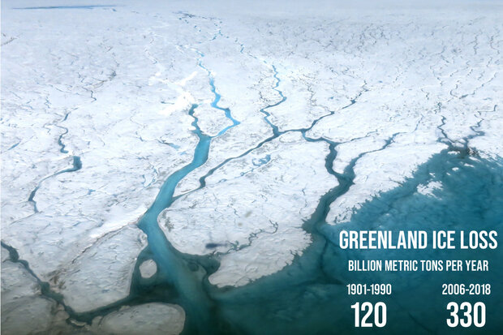

Global Action to combat Climate Change and its Impacts
Introduction
The United Nations established 17 Sustainable Development Goals (SDGs) in 2015 to address global challenges such as poverty, inequality, environmental degradation, and climate change. SDG 13: Climate Action focuses on taking urgent actions to combat climate change and its impacts. Climate change, driven primarily by greenhouse gas emissions from human activities, is resulting in rising temperatures, shifting weather patterns, sea-level rise, and more frequent extreme weather events. This goal emphasizes strengthening resilience, promoting climate education, integrating climate policies into national agendas, and mobilizing resources to mitigate climate impacts.
The significance of SDG 13 cannot be overstated, as climate change affects ecosystems, food security, health, economies, and communities worldwide. Achieving Climate Action requires collaborative efforts across nations, industries, and communities. This report delves into the impacts, significance, and methods to address climate change, highlighting the urgent need for sustainable solutions to safeguard the planet.
Global Climate Action
Global climate action involves coordinated efforts from countries, organizations, businesses, and individuals worldwide to address climate change and reduce greenhouse gas emissions. The central goal is to limit global warming to well below 2°C above pre-industrial levels, ideally aiming for 1.5°C, as set by the Paris Agreement in 2015. This goal requires transformative changes across energy, transportation, agriculture, and other key sectors, alongside protecting natural ecosystems that can absorb carbon.
Governments can address the issue of SDG-13, or climate action, by taking urgent action to combat climate change and its impacts. Some ways governments can do this include:
Creating climate action plans
Governments can create climate action plans for universities and other entities.
Integrating climate change measures into national policies
Governments can integrate climate change measures into national policies, strategies, and planning.
Improving education and awareness
Governments can improve education, awareness-raising, and human and institutional capacity on climate change.
Increasing funding for research
Governments can increase funding for climate and sustainability research.
Fostering partnerships
Governments can foster partnerships between universities, government agencies, and industry.
Supporting programs
Governments can support programs that encourage student and faculty involvement in climate action projects.
Key Components of Global Climate Action:
National Commitments (NDCs)
Countries submit Nationally Determined Contributions (NDCs), which outline their plans to reduce emissions and adapt to climate change. These plans vary based on each nation’s circumstances and are updated every five years to raise ambition.
Renewable Energy Transition
Shifting from fossil fuels to renewable sources like solar, wind, and hydropower is crucial to achieving emissions targets. Many nations are investing in renewable infrastructure, improving grid efficiency, and encouraging electric vehicle adoption.
Adaptation and Resilience
Adaptation efforts aim to protect communities, infrastructure, and natural systems from climate-related impacts. This includes flood defenses, sustainable agriculture practices, and disaster preparedness, especially for vulnerable regions.
Financing and Technology Transfer:
Wealthier countries and international organizations are committed to providing financial aid and technology to developing nations, which often face the brunt of climate impacts despite contributing less to global emissions. Funding helps these countries invest in low-carbon development and adaptation.
Impacts of Climate Change
Rising Temperatures and Heat Waves Global temperatures have risen by approximately 1.1°C above pre-industrial levels, with severe consequences for the environment and human health. Rising temperatures result in heatwaves, which cause dehydration, heatstroke, and respiratory issues, particularly affecting vulnerable populations like the elderly and young children. Warmer temperatures also impact agricultural productivity, altering crop growth patterns and reducing food security.
Extreme Weather Events Climate change is linked to an increase in extreme weather events, including hurricanes, floods, droughts, and wildfires. These events cause loss of life, damage to infrastructure, and economic losses. For instance, hurricanes and typhoons bring heavy rainfall, flooding, and wind damage, displacing communities and overwhelming emergency services. Droughts contribute to water scarcity, reducing crop yields and threatening livelihoods, particularly in arid regions. The frequency and intensity of wildfires have increased in many parts of the world, leading to loss of biodiversity, property damage, and health hazards due to air pollution.
Sea-Level Rise Melting polar ice caps and glaciers, combined with the thermal expansion of seawater, are causing sea levels to rise. This threatens coastal communities, low-lying islands, and biodiversity-rich ecosystems like mangroves and coral reefs. Coastal erosion, saltwater intrusion, and increased flooding disrupt human settlements, agriculture, and tourism, endangering the livelihoods of millions who live in coastal areas. Small island nations are particularly vulnerable, as rising sea levels pose an existential threat to their sovereignty.

Impact on Ecosystems and Biodiversity Climate change disrupts ecosystems by altering temperature, precipitation, and seasonal patterns. Many species are struggling to adapt to these rapid changes, leading to habitat loss, reduced biodiversity, and increased extinction risks. Coral reefs, which are highly sensitive to temperature changes, are experiencing widespread bleaching, threatening marine biodiversity. Climate shifts are also causing species migration, leading to changes in ecosystems and food webs, further endangering biodiversity.
Public Health Risks Climate change exacerbates public health risks by increasing the spread of diseases, reducing air quality, and creating water and food scarcity. Warmer temperatures and altered rainfall patterns create favorable conditions for vector-borne diseases like malaria and dengue. Additionally, extreme weather events disrupt healthcare infrastructure and reduce access to essential services. Wildfire smoke and air pollution worsen respiratory conditions and cardiovascular diseases, posing health risks to populations globally.
Economic and Social Impacts Climate change has significant economic impacts, costing billions in damage and lost productivity. Agriculture, tourism, and fishing industries are particularly vulnerable to climate disruptions. Smallholder farmers face crop failures, reduced yields, and increased costs due to changing weather conditions, affecting food prices and exacerbating poverty. Disasters triggered by extreme weather events lead to economic losses and widen social inequalities, disproportionately impacting low-income communities and developing nations.
Significance of Achieving SDG 13
Environmental Sustainability
Achieving SDG 13 is essential for preserving environmental stability. By limiting temperature rise, we can protect biodiversity, maintain ecosystems, and reduce environmental degradation. Climate action supports sustainable natural resource management, protecting ecosystems like forests, wetlands, and oceans, which are critical carbon sinks.
Economic Resilience
Climate action promotes economic resilience by reducing the costs associated with climate-related disasters. Transitioning to a low-carbon economy fosters sustainable industries, generates jobs, and drives technological innovation. Clean energy sectors, such as wind and solar power, offer employment opportunities, and sustainable agriculture practices increase food security and support rural economies.
Health and Well-Being
Addressing climate change reduces public health risks by improving air quality, reducing heat-related illnesses, and preventing the spread of climate-sensitive diseases. Mitigating climate impacts also enhances mental well-being by reducing the psychological stress associated with climate anxiety and extreme weather events. Improved health outcomes support human productivity and quality of life.
Social Equity
Climate action addresses social equity by reducing the vulnerabilities of marginalized communities, who often bear the brunt of climate impacts. Ensuring that climate policies are inclusive and consider the needs of affected communities can reduce inequalities and promote social cohesion. Adaptation strategies, such as building resilient infrastructure, benefit vulnerable populations and improve their ability to withstand climate shocks.
Intergenerational Responsibility
Achieving SDG 13 fulfills a moral responsibility to future generations. Failing to act on climate change risks irreversible damage to the planet, compromising the resources and opportunities available for future generations. Climate action promotes a legacy of environmental stewardship and sustainable development, preserving the Earth for future inhabitants.
Proposed Methods to Achieve SDG 13
Transition to Renewable Energy Shifting from fossil fuels to renewable energy sources, such as solar, wind, and hydroelectric power, is fundamental to reducing greenhouse gas emissions. Governments should provide incentives for renewable energy investments, phase out subsidies for fossil fuels, and implement policies that support clean energy production. Encouraging decentralized energy systems, like rooftop solar panels, empowers communities to generate their own power sustainably. By expanding renewable energy infrastructure, nations can lower carbon emissions and create jobs in emerging green sectors.
Enhance Energy Efficiency Improving energy efficiency in buildings, transportation, and industries reduces energy demand and lowers emissions. Policies promoting energy-efficient appliances, electric vehicles, and public transportation can significantly reduce carbon footprints. Retrofitting buildings with better insulation and efficient heating, ventilation, and cooling systems can reduce energy consumption. Governments and businesses should adopt green building standards, prioritize sustainable urban planning, and invest in smart technologies that optimize energy use.
Reforestation and Ecosystem Restoration Forests, wetlands, and other natural ecosystems act as carbon sinks, absorbing CO₂ from the atmosphere. Reforestation, afforestation, and ecosystem restoration efforts can increase carbon sequestration, reduce emissions, and enhance biodiversity. Protecting existing forests is crucial, as deforestation contributes significantly to greenhouse gas emissions. Community-led reforestation projects, land restoration initiatives, and agroforestry practices support sustainable land use, benefiting both ecosystems and local economies.
Climate-Smart Agriculture Agriculture is a major source of greenhouse gas emissions due to methane from livestock and nitrous oxide from fertilizers. Climate-smart agriculture (CSA) promotes practices that reduce emissions, enhance resilience, and improve food security. Techniques like crop rotation, organic farming, efficient irrigation, and soil conservation can improve productivity while minimizing environmental impact. CSA also supports smallholder farmers by improving their resilience to climate shocks, ensuring stable food supplies in the face of climate change.
Promote Sustainable Transportation Transportation is a significant source of carbon emissions, and transitioning to low-emission transportation options is essential for climate action. Policies encouraging public transportation, cycling, and walking can reduce vehicle emissions in urban areas. Governments should invest in electric vehicle (EV) infrastructure, including charging stations, and offer incentives for EV purchases. Promoting cleaner fuels, like biofuels and hydrogen, and supporting the development of electric buses and trains can further reduce transportation-related emissions.
Implement Climate-Resilient Infrastructure Adaptation is necessary to address the climate impacts that are already unavoidable. Climate-resilient infrastructure, such as flood barriers, stormwater systems, and elevated buildings, can protect communities from extreme weather events. Urban planning should consider climate risks, with measures like green roofs, permeable pavements, and nature-based solutions that reduce urban heat and manage stormwater. Investing in resilient infrastructure reduces future costs from climate-related damages and supports sustainable urban growth.
Strengthen Climate Education and Awareness Raising public awareness about climate change is crucial for fostering a culture of sustainability. Climate education should be integrated into school curricula, empowering youth with the knowledge to address environmental challenges. Awareness campaigns, community workshops, and partnerships with media organizations can promote eco-friendly behaviors and build public support for climate policies. Engaging communities in climate action initiatives, like waste reduction, recycling, and energy conservation, builds a collective commitment to sustainability.
International Cooperation and Climate Finance Climate change is a global issue that requires international cooperation and support. Wealthier nations have a responsibility to assist developing countries by providing financial resources, technology, and expertise for climate action. Climate finance mechanisms, such as the Green Climate Fund, support adaptation and mitigation projects in vulnerable regions. International agreements, like the Paris Agreement, are essential for coordinating efforts, setting emission reduction targets, and sharing best practices. Climate diplomacy and collaborative research initiatives can enhance global efforts to combat climate change.
Carbon Pricing and Emission Reduction Policies Carbon pricing mechanisms, like carbon taxes and cap-and-trade systems, create economic incentives to reduce emissions. By placing a cost on carbon emissions, businesses and individuals are encouraged to adopt cleaner practices and reduce their carbon footprints. Governments should establish ambitious emission reduction targets and enforce regulations that limit emissions from industries, transport, and energy. Monitoring and reporting frameworks are necessary to ensure accountability and track progress toward climate goals.
Challenges in Achieving SDG 13
Implementing climate action faces challenges, including political resistance, economic interests, and lack of funding. Fossil fuel dependency, competing priorities, and inadequate infrastructure hinder the transition to sustainable practices. Climate adaptation and mitigation require substantial financial investments, making international support and climate finance essential for developing nations.
Recommendations
Increase investments in renewable energy, sustainable transportation, and climate-resilient infrastructure.
Foster international cooperation to provide technology and financial support for vulnerable regions.
Promote public engagement through climate education, awareness campaigns, and community-driven initiatives.
Adopt carbon pricing to encourage businesses to reduce emissions and drive sustainable practices.
Conclusion
SDG 13, Climate Action, is essential for safeguarding the environment, improving human well-being, and ensuring economic resilience. By transitioning to renewable energy, enhancing adaptation measures, and promoting sustainable practices, the world can address climate change and build a sustainable future. Collaborative efforts across all sectors are necessary to mitigate climate impacts, protect ecosystems, and create a more resilient and equitable world.